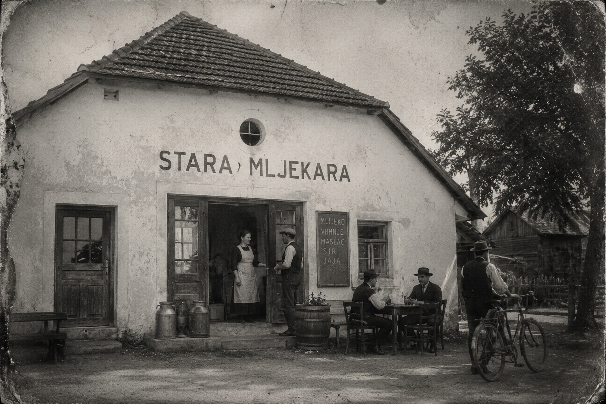
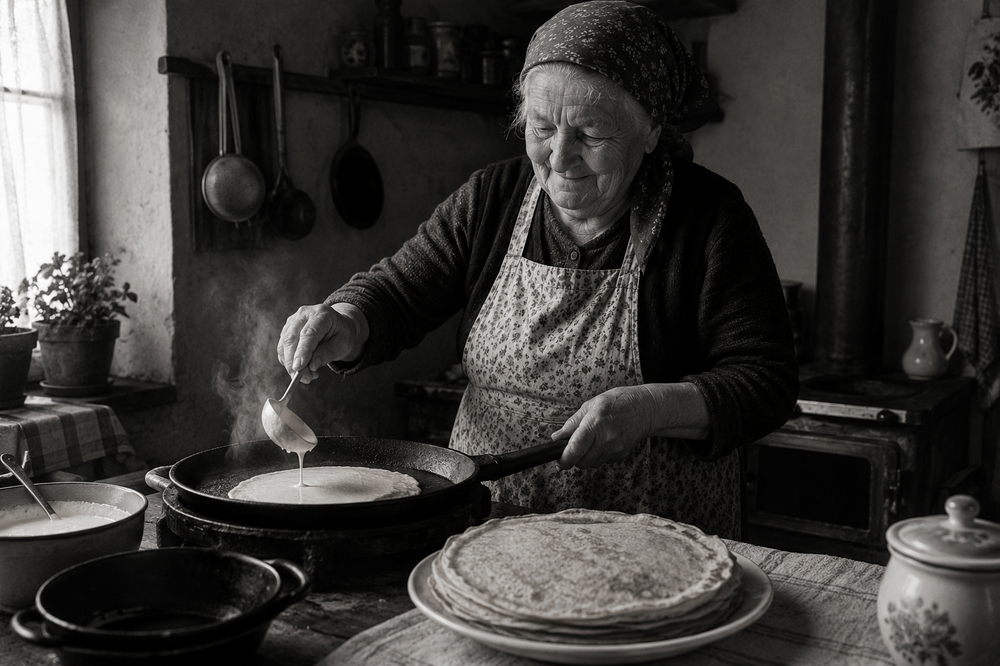

Baka Marica i tava kao svadbeni poklon.
Recept je bio za njezine kćeri, za nedjeljne doručke i rođendane. Nikad nije zamišljala da će ga jednog dana netko peći za strance.
Tijesto tanko, gotovo prozirno. Željezna tava, drvena peć, maslac rezan nožem. Sve je trajalo dugo. Nikad nije žurila.
 Baka Marica · 1974.
Baka Marica · 1974.
Stara mljekara u Vlaškoj ul. 10.
Špoljaričinke smo otvorili 2021. u staroj mljekari u Vlaškoj ul. 10. Drveni podovi škripe na pravim mjestima, zidovi su puni obiteljskih fotografija.
Svjetlo pred podne pada točno preko velikog stola u sredini. Tu sjede gosti s knjigama. Ne smetamo ih.

Vlaška ul. 10 · danasPolako. Ručno. Uvijek po narudžbi.
Svaku palačinku radimo polako i uvijek po narudžbi. Peče se za tebe, ne za nekoga tko dolazi za 10 minuta.
Kuhari koji ostaju i nakon smjene, konobari koji znaju tvoje ime. Baka Marica i dalje povremeno svrati provjeriti tijesto.

Kuhinja · svaki dan